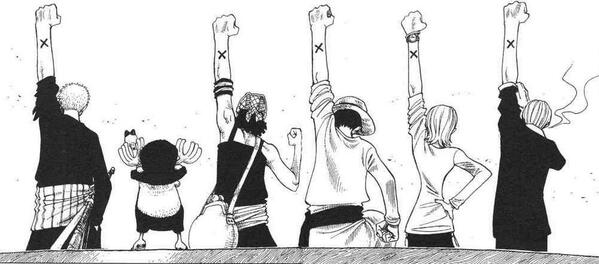

サンプル
人間とは？
人間とは、人。 There are three biggest reasons, "For the future", "Independence", and "Growth".
1. For the future
I currently do an internship activity as a data scientist at a company, Data Artist. From my own experience, I think what is important for data scientists is "understanding of machine learning theory" and "understanding of data". Of course, the latter one can be realized by analyzing the data, but I think being taught and gained from those familiar with that field is more important. In addition, as you can see from the fact that "Neural Networks" were originally modeled on human neurons, it is powerful way to incorporate ideas and knowledge from other fields.
That's why my current future dream is "become a member of the Straw Hats". Straw Hats is a pirate team in the ONEPIECE, and all the members on board excel in a different field and are wanted person with reward, in other words, ability is very high. I want to make such an organization and provide value to members.
Fortunately, I could enroll in the University of Tokyo, where there are a lot of people who study in other disciplines to me in the same campus. I would like to communicate with such people, and increase the range of what I can and what I know.
However, I think becoming mere acquaintance gives little to each other. For example, suppose you get a business card from an adult. Half year ago, I was pleased as if I became a businees man, but that was just a "social manner", and what I could get by exchanging business cards was about name, phone number, and job title of that person, only information we could search on the Internet. I do not want to get the relationships that we can't provide value to each other, so I think it is more important to build a relationship that both need each other than to have 100 business cards.
The point is that I think it is more important to build deeper relationships and expand that than just expand acquaintance community. Let’s get back on track.
The 2 friends who start a share house with me this time study Economics, and Information Science, both regions are I am especially interested in. Besides, they do internship activity and are very sociable. I have an allure for them, and their friends. Therefore, I think it is possible to create a good community by becoming more intimate and spreading friendship relations with each other, while making a living with them.

2. Independence
I am now 20 years old. Socially it is the age called "adult". However, since I currently live in my parent's house, I don't do "what I should do as an adult", such as official procedures, self catering, washing, etc.
Last month, I went to real estate for the first time, and learned the meaning of "security deposit", and "caution money"
It is already said that "Todai students can only study", I would like to acquire the ability to live in society by doing them on my own.
3. Growth
One of my beliefs is "You have to change in order to grow." I live in my parents' house now, and it is a perfect environment. Some may feel it is a waste to let go of such an environment. However, I believe that living there has a negative impact on my growth. I feel that "the difference between 0 and 1 is larger than the difference between 1 and 10". I want to experience by myself.
Also, my housemates are excellent people, so feeling their lifestyle, growth and what they are thinking from experience is much more exciting than the current environment. I want to put myself in an exciting environment, so I decided to start a share house.
How to make a living?
Currently, I have a saving of 1 million yen and I think it is a sufficient amount as the initial funds. However, it is necessary to obtain sustained money. It is possible to pay myself by increasing the time of internship activity, but then the meaning of share house will be reduced. So, I plan to get aid from my parents for about 30,000 yen a month. Of course, I will return this money.
Determination
As you may have understood so far, I do not intend to do a share house for "to play", "to escape parental constraints", "to invite a girl to my house". I would like to share house for "my dream".
It may occur that I often refuse an invitation, for the reason that I need to earn and save money, but I hope you continue to invite and get in touch with me in the future.